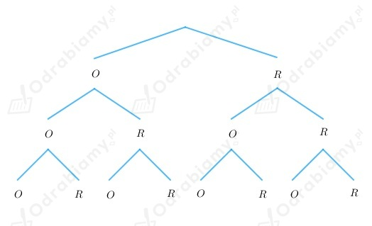

Naszkicujmy drzewko przedstawiające wyniki trzech rzutów monetą:

Wiemy, że zbiór wszystkich możliwych zdarzeń elementarnych, to:
A - orzeł wypadł co najwyżej raz
B - co najmniej raz wypadła reszka
C - reszka wypadła dokładnie dwa razy
D - wypadły same orły
E - wypadło więcej orłów niż reszek
Zdarzenia wykluczające się, to zdarzenia które nie mają części wspólnej.
W przypadku podanego przykładu są to pary zdarzeń:
A i D, A i E, B i D, C i E, C i D.
Zdarzenia przeciwne, to zdarzenia których suma jest zbiorem wszystkich
możliwych zdarzeń elementarnych.
W przypadku podanego przykładu są to pary zdarzeń:
A i E, B i D.
Rzucamy trzy razy kostką.
Możliwe do otrzymania wyniki w rzucie kostką, to cyfry ze zbioru {1, 2, 3, 4, 5, 6}.
A - suma wyrzuconych oczek jest równa 17
Wiemy, że: 17=6+6+5.
Zatem:
B - suma wyrzuconych oczek jest nie większa niż 6
Zatem:
C - iloczyn wyrzuconych oczek jest równy 36
Wiemy, że: 36=6·6·1=3·2·6=3·3·4.
Zatem:
W urnie są trzy kule ponumerowane liczbami 12, 13 i 14.
Losujemy bez zwracania dwie kule.
A - obydwie wylosowane liczby są nieparzyste.
Zdarzenie A jest zdarzeniem niemożliwym, bo tylko jedna liczba jest nieparzysta, a losujemy dwie liczby.
B - suma wylosowanych liczb jest liczbą pierwszą.
Zdarzenie B jest zdarzeniem niemożliwym, bo 12+13=25, 12+14=26, 13+14=27
(żadna z tych sum nie jest liczbą pierwszą).
C - suma wylosowanych liczb jest równa co najwyżej 24.
Zdarzenie C jest zdarzeniem niemożliwym, bo każda suma dwóch wylosowanych liczb jest większa od 24.
D - jedna z wylosowanych liczb jest parzysta.
Zdarzenie D jest zdarzeniem pewnym, bo wśród trzech liczb dwie są liczbami parzystymi, więc
losując dwie liczby wylosujemy albo dwie parzyste, albo jedną parzystą, a drugą nieparzystą.
Z treści zadania wiemy, że rzucamy dwa razy kostką.
A - pierwsza wyrzucona liczba jest nie mniejsza od drugiej.
A = {(1, 1), (2, 1), (2, 2), (3, 1), (3, 2), (3, 3), (4, 1), (4, 2), (4, 3), (4, 4), (5, 1),
(5, 2), (5, 3), (5, 4), (5, 5), (6, 1), (6, 2), (6, 3), (6, 4), (6, 5), (6, 6)}
B - wśród wyrzuconych liczb są liczba parzysta i liczba nieparzysta.
B = {(1, 2), (1, 4), (1, 6), (2, 1), (2, 3), (2, 5), (3, 2), (3, 4), (3, 6), (4, 1), (4, 3),
(4, 5), (5, 2), (5, 4), (5, 6), (6, 1), (6, 3), (6, 5)}
Wypisujemy wyniki sprzyjające zdarzeniom:
A' - pierwsza wyrzucona liczba jest mniejsza od drugiej.
A' = {(1, 2), (1, 3), (1, 4), (1, 5), (1, 6), (2, 3), (2, 4), (2, 5), (2, 6), (3, 4), (3, 5),
(3, 6), (4, 5), (4, 6), (5, 6)}
___________________
B' - wśród wyrzuconych liczb są dwie liczby parzyste lub dwie liczby nieparzyste
B' = {(1, 1), (1, 3), (1, 5), (2, 2), (2, 4), (2, 6), (3, 1), (3, 3), (3, 5), (4, 2), (4, 4),
(4, 6), (5, 1), (5, 3), (5, 5), (6, 2), (6, 4), (6, 6)}
Zależność A ∪ B = Ω nie zachodzi, bo do sumy zbiorów A i B nie należy np. para (1, 3).
Zależność A' ∪ B = B nie zachodzi, ponieważ A' ⊄ B.
Zależność A \ B = B' nie zachodzi, bo:
A \ B = {(1, 1), (2, 2), (3, 1), (3, 3), (4, 2), (4, 4), (5, 1), (5, 3), (5, 5), (6, 2),
(6, 4), (6, 6)} ≠ B
Zależność B' ⊂ A nie zachodzi, bo np. para (1, 3) nie należy do A.
Z treści zadania wiemy, że w urnie są kule ponumerowane od 1 do 5.
Losujemy z urny kolejno dwie kule bez zwracania.
a)
A - za drugim razem wylosowano liczbę parzystą
A = {(1, 2), (1, 4), (2, 4), (3, 2), (3, 4), (4, 2), (5, 2), (5, 4)}
B - iloczyn wylosowanych liczb jest równy 4
B = {(1, 4), (4, 1)}
C - pierwsza wylosowana liczba jest mniejsza od drugiej
C = {(1, 2), (1, 3), (1, 4), (1, 5), (2, 3), (2, 4), (2, 5), (3, 4), (3, 5), (4, 5)}
b)
Wyznaczamy podane zdarzenia:
A ∪ B = {(1, 2), (1, 4), (2, 4), (3, 2), (3, 4), (4, 1), (4, 2), (5, 2), (5, 4)}
A ∩ B = {(1, 4)}
B ∩ C = {(1, 4)}
A ∩ B ∩ C = {(1, 4)}